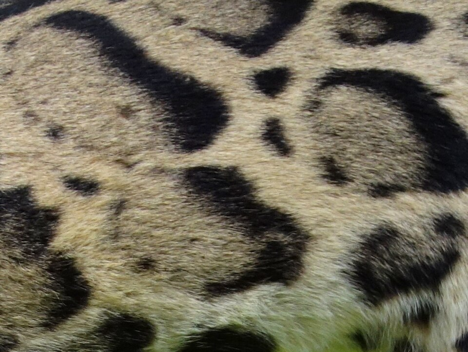
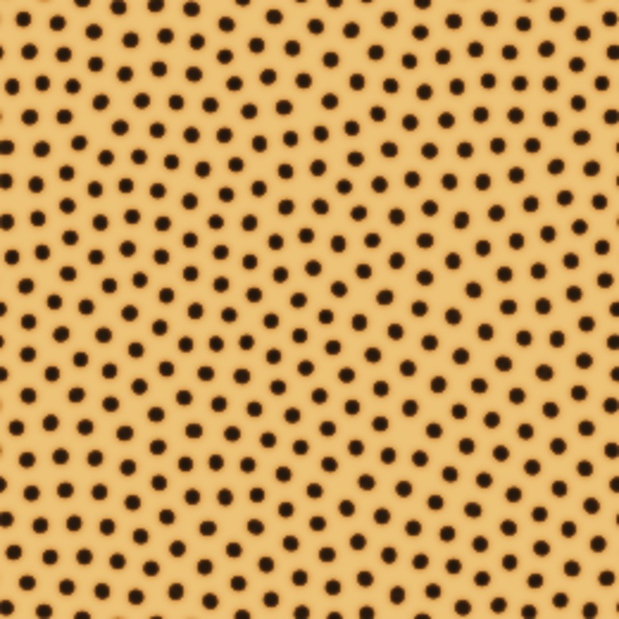
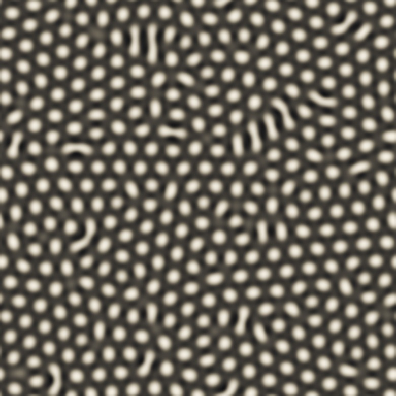
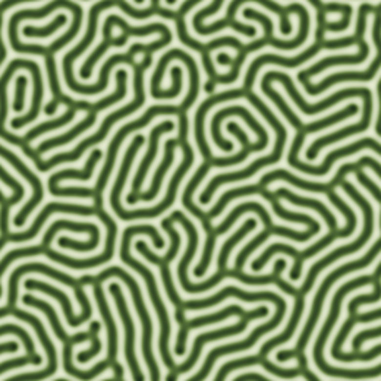
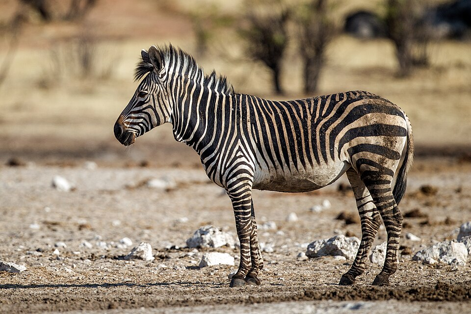

How do patterns in nature relate to mathematical laws?
Alan Turing, two chemicals, and the maths behind a leopard’s spots.
ObserverLanchenba Mutum
ModelReaction–diffusion
SpecimenThe leopard
Many people associate Alan Turing with the Enigma machine, but in this essay, I shall be exploring one of his later works where he discovered the connection between nature and mathematics. When you think of the word nature and the concept of mathematics, many people’s minds instinctively lean towards mathematical biology and statistics. Today I will be showing the mathematical modelling side where we look at the underlying mechanisms behind the statistics, differentiating between the correlation and causation.
Alan Turing, 1951. His paper on pattern formation came out a year later.
Mathematics not only describes the patterns we see in nature but explains how they came about. This essay will be exploring how mathematical modelling and the reaction-diffusion principle, founded by Alan Turing, can be used to explain how animal patterns, specifically leopard print, are formed.
observation 1The reaction-diffusion principle
The reaction-diffusion principle involves short-range activation coupled with long-range inhibition of chemicals. Morphogens are diffusible signalling molecules that can determine the fate of a cell based off its concentration, and often neighbouring cells with different concentrations can result in a concentration gradient. Within a group of cells there are two morphogens, morphogen A creates more of itself, whilst morphogen B limits the creation of morphogen A. Morphogen A is an activator which promotes the production of pigment and morphogen B is an inhibitor which suppresses the production of pigment.
The activator boosts itself close by. The inhibitor it makes travels further and switches the activator off all around.
These substances diffuse through cell tissue at different rates which causes the formation of different patterns. A stable chemical system where the substances do not undergo reactions under normal environmental conditions becomes unstable with the presence of diffusion, causing these patterns to form. This is an example of emergent phenomena where complex, and often unexpected patterns or properties arise from the simple interactions within a system, leading to a higher level of organisation.
observation 2The equations
The interactions and behaviours of these morphogens can be shown through the following partial differentiation equations:
$$\frac{\partial u}{\partial t} = D_u\nabla^2 u + f(u,v)$$
$$\frac{\partial v}{\partial t} = D_v\nabla^2 v + g(u,v)$$
change over time=diffusion+reaction
\(u\) and \(v\)
The letters “u” and “v” represent the different concentrations of the two morphogens (the activator and the inhibitor). “u” is normally considered to represent the activator while “v” represents the inhibitor.
“∂u/∂t” and “∂v/∂t” are notations which mean that the following equation shows how the concentration of the chemicals changes over time.
\(D\)
“D” is the diffusion coefficient which controls how fast the chemicals diffuse and spread. Usually \(D_v > D_u\), meaning the inhibitor spreads faster than the activator. The inhibitor is usually faster than the activator so while the inhibitor spreads and controls certain areas, the slower activator builds up in more local areas, this creates spots which becomes more relevant when creating certain patterns in nature such as leopard print.
\(\nabla^2 u\), \(\nabla^2 v\)
“∇²u” and “∇²v”, also known as the Laplacian, is used to describe how the chemical spreads and diffuses in space. If there is a high concentration in a certain area, the chemical will spread outwards and take up more space. If there is a low concentration in a certain area, then the spread of the chemical will remain local and nearby chemicals will flow in.
\(f(u,v)\), \(g(u,v)\)
“f(u,v)” and “g(u,v)” describes the chemical reactions and how the activator and inhibitor interact with each other. This is where the activator produces more of itself and creates pigment, while the inhibitor supresses the activator to create the pattern.
Spots from the equations: the slow activator piles up in small patches, and the fast inhibitor keeps the space between them clear.
in shortTo simply put this equation into words, change over time = diffusion + reaction. This creates a pattern because the activator builds up to create a high concentration in a small local area which is short-range activation. Meanwhile, the inhibitor spreads out and diffuses, supressing the surrounding regions, which is long-range inhibition. As a result, this leaves isolated areas of high pigmentation which creates spots.
case studyThe leopard
Zooming into the specific case study of a leopard, famous for their unique spots and rosette patterns. In this case, the activator is the alpha-melanocyte stimulating hormone, this binds to the melanocortin-1 receptor which causes the production of eumelanin – the black/brown pigment which forms the shapes of the spots and rosettes. The inhibitor is the agouti signalling protein which blocks the alpha-melanocyte stimulating hormone from binding to the receptor. This stops the production of eumelanin and initiates the production of pheomelanin – the yellow pigment which is the base colour of the leopard.
The leopard’s two morphogens, and the two pigments they switch between.

Rosettes close up (a clouded leopard’s coat)
As a leopard grows, these spots stretch out and expand across the body to form unique rosette shapes, hence why these are more commonly found in adult leopards.
However, small changes to the different constituents of the equation such as the rate of diffusion or the concentration can create a large range of biological diversity and instead of spots forming, it could create the stripes of a zebra or the scales of a fish.
observation 3One model, many coats

Spots

Spots turn into holes

Stripes and mazes
All three were grown from the same two reaction–diffusion equations (the Gray–Scott model). Only the feed and removal rates change from panel to panel.
These biological structures which are a result of the interactions between chemicals and small changes within the mathematical model can create different products. This shows how mathematical models can create structured chaos and irregularity and that maths is not always about perfect symmetry.

Hartmann’s mountain zebra, Etosha
observation 4Plants and pests
Turing’s reaction-diffusion theory also helps plants with defence against pests where the activator and the inhibitor are both highly concentrated defensive chemicals which repulse pests. Turing’s theory allows plants to strategically distribute the defensive chemicals in patches over a large surface area rather than waste chemicals and energy coating the entire plant. This could be referred to as a biological pre-pattern, where the stable chemical concentration gradients arise form the biochemical networks within the organism, before physical cells differentiate.
evaluationAn idealisation
Turing called his own model an “idealisation”, and even a “falsification”.— and it is still useful
Turing has explicitly acknowledged the fact that his model is an “idealisation” and has even described it as a “falsification”. This shows how mathematical models are not made to perfectly replicate reality but to isolate, analyse, and represent significant mechanisms. We can still evaluate this model even though it incorporates the fundamental processes which result in the formations of these patterns within nature. It fails to take into consideration the biological detail behind these processes. Though mathematics plays a crucial role in nature, true biology and nature is more complex than just two chemicals moving around each other, the environment and a certain aspect of randomness also plays a big role.
sourcesBibliography
Tohru Ishitani (2023), Cadherin-linked morphogen gradient actualizes robust tissue patterning. Osaka: Osaka University, Department of Homeostatic Regulation, Research Institute for Microbial Diseases. Available at: https://www.sciencedirect.com/topics/biochemistry-genetics-and-molecular-biology/morphogen
F. Boegogno, P. D’Odorico, F. Laio, L. Ridolfi (2009), Mathematical models of vegetation pattern formation in ecohydrology. Available at: https://agupubs.onlinelibrary.wiley.com/doi/full/10.1029/2007RG000256#:~:text=In%20most%20models%20of%20self%2Dorganized%20vegetation%2C%20patterns,to%20an%20asymmetric%20state%2C%20which%20exhibits%20patterns.
Matilda Battersby. The maths behind a leopard's spots. The maths behind a leopard's spots. BBC Earth. Available at: https://www.bbcearth.com/news/the-maths-behind-a-leopards-spots
Philip K. Maini, Kevin J. Paintera and Helene Nguyen Phong Chau (1997). Spatial pattern formation in chemical and biological systems. Faraday Research Article. Centre for Mathematical Biology, Mathematical Institute (Oxford) & Ecole des Mines de Paris. Available at: https://people.maths.ox.ac.uk/maini/PKM%20publications/96.pdf
Ian J. Jackson (2013). How the leopard gets its spots: a transmembrane peptidase specifies feline pigmentation patterns. Wiley Online Library. Available at: https://onlinelibrary.wiley.com/doi/full/10.1111/pcmr.12101#:~:text=So%2C%20it%20is%20suggested%2C%20the,life%2C%20through%20many%20hair%20cycles.
Alexsandra Schneider, Victor A David, Warren E Johnson, Stephen J O'Brien, Gregory S Barsh, Marilyn Menotti-Raymond, Eduardo Eizirik (2012). How the leopard hides its spots: ASIP mutations and melanism in wild cats. Available at: https://www.sciencedirect.com/topics/biochemistry-genetics-and-molecular-biology/morphogen
P. Maini (2012), The University of Edinburgh, Prof. Philip Maini: Turing’s Theory of Developmental Pattern Formation. Available at: https://www.youtube.com/watch?v=pN8tVldm6QY
Animated biology With Arpan (2022), Morphogen gradient | What are morphogens? | How do morphogens determine cell fate? | Dev-bio. Available at: https://www.youtube.com/watch?v=Ebnwj_y-zmw&t=156s
S. Kondo (2021), International Centre of Theoretical Sciences. Available at: https://www.youtube.com/watch?v=XRLzr9lOd9w&t=23s
Photographs via Wikimedia Commons: African leopard male by Sumeet Moghe, CC BY-SA 4.0 · Alan Turing (1951) by Elliott & Fry, public domain · Hartmann’s mountain zebra by Yathin S Krishnappa, CC BY-SA 4.0 · Clouded leopard’s rosettes by Daderot, CC0. Pattern panels simulated for this edition with the Gray–Scott reaction–diffusion model.